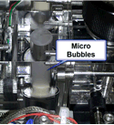

Tshoot: Precision and wash (pump and valve)
This document provides information regarding pump and valve errors in Access instruments with Revision B Fluidics. It also provided information regarding the engineering design changes that have been made for improving the reliability of precision valve parts.
Valve Errors
These are the most common valve errors and the possible resolutions for them.
| Issue | Failure Details | Possible Resolution |
|---|---|---|
| Coupler - Worn | The valve motor coupler tab may be worn or damaged (redesigned and now manufactured with a steel coupler instead of plastic coupler). | Install a new metal coupler/motor assembly.
Note: An additional resolution for this issue may be to change the precision valve mounting block (P/N 02-007563-3). The motor mounting block has been revised. When installed, it allows the motor coupler to engage 0.020 of an inch further into the rotor shaft.
|
| Coupler - Broken | The plastic tab on the valve motor coupler could be completely broken off (redesigned and now manufactured with a steel coupler). | |
| Error - Move | When the valve is sent a command to rotate, it fails to do so and a move error is posted. |
|
| Rotor Shaft - Dirty | A sticky black substance may accumulate on the rotor shaft just below the valve stator. | This should not cause errors. Clean the rotor with an alcohol swab and reassemble. |
| Rotor / Stator - Stuck |
|
Remove rotor and inspect for damage. Clean the valve and rotor surfaces with deionized water and reassemble. |
|
Micro bubbles in wash pump  |
|
|


Pump Errors
These are two types of pump errors and their possible resolutions.
Note:
- Pump errors are often caused by problems with the valve.
- Failure of the valve to move accurately to a location causes the pump to attempt to pump fluid through the valve when the valve ports are either partially or completely misaligned.
- If the valve is found to be in proper working order, then check the pump.
- When pump errors occur, first check the valve for issues using the "Valve Errors" section of this document.
| Type of Pump Error | Possible Resolution |
|---|---|
| Move |
|
| Backlash calibration out of range | Replace the belt, seal or entire pump.
Note:
|